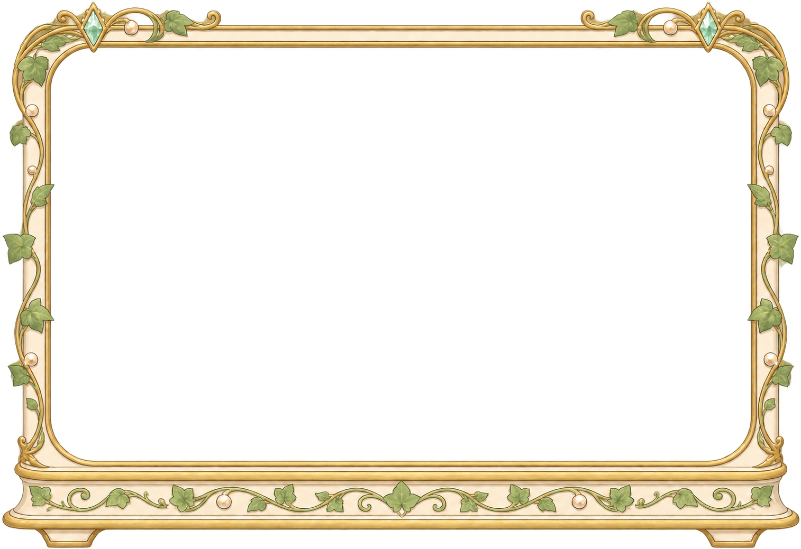
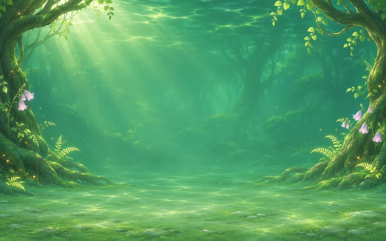

已认可的翡翠绿背景，搭配四栋独立建筑；可以成套购买，也可以自由混搭。

默认使用普通边缘，缸内保持 16:10。背景与每件建筑独立，不限制跨主题混搭；现有前后景各 3 件的容量规则仍保留。本页没有购买或玩家存档操作。
建议包含秘境背景与四栋建筑；背景、建筑均可单买。买后每件独立拥有，可以拆换、混入旧装饰或换成其他背景。
已拥有的部分抵扣，按缺件结算；套装只提供优惠与推荐摆法。缸框暂不列入套装。
勾选已拥有成员，查看本轮候选报价。仅为缺件按 8 折计价，早前单买差价不追溯退还。
这是离线报价演示，只算金额，尚未接入解锁条件；不读取玩家库存，也不会购买物品。候选价与抵扣说明
默认显示实际导出的 128×128 WebP，64px 由该缩略图缩放；放大审图读取主图。浅深底用于检查透明边缘，四栋建筑仍待美术确认。深浅底合成 · 缩略图对照

翡翠绿水域、弯曲树根、苔石地面与少量淡紫花，明显区分现有蓝色海景。中央低对比区为鱼群留白，奶白金边建筑形成暖色焦点。
背景中没有鱼或可购买建筑。可单独购买背景，搭配已拥有的任意兼容装饰，无需买齐整套。
此图是外轮廓缸框与底座，用来改变鱼缸外观。按本轮反馈，暂不作为必做内容、默认外观或套装成员，保留候选原图。
候选仍有彩边与开窗比例待规范化；框层技术检查未完成，不影响已认可的背景原图。
套装是购齐缺件与推荐陈列的入口，购买后不锁定搭配。本轮候选单价为背景 12,000、小屋 1,600、风车 2,400、钟楼 3,600、船馆 5,400；按缺件 8 折计算，全套 20,000。价格、门槛与抵扣政策均待确认。所有收益与容量继续沿用原玩法；本页未实现购买、折扣或套装保存。